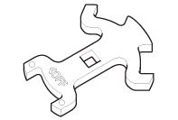
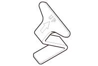
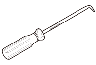

LEMON Manuals
: Even more car manuals for everyone: 1960-2025
Home
>>
Honda
>>
2016
>>
Civic LX, 4D Sedan, Automatic CVT Trans
>>
Repair and Diagnosis
>>
Engine Performance
>>
Fuel Delivery
>>
Fuel And Emissions - Service Information
>>
Removal and Installation
>>
Mis-Fuel Inhibit Device Removal and Installation (2016 2017 2018)
>>
Notes
Mis-Fuel Inhibit Device Removal and Installation (2016 2017 2018): Notes
Special Tools Required
Image
Description/Tool Number

Courtesy of HONDA, U.S.A., INC.
Capless Wrench 07AAF-TBAA100

Courtesy of HONDA, U.S.A., INC.
Capless Flapper Retainer 07AAF-TBAA200

Courtesy of HONDA, U.S.A., INC.
Capless Pick 07AAF-TBAA300